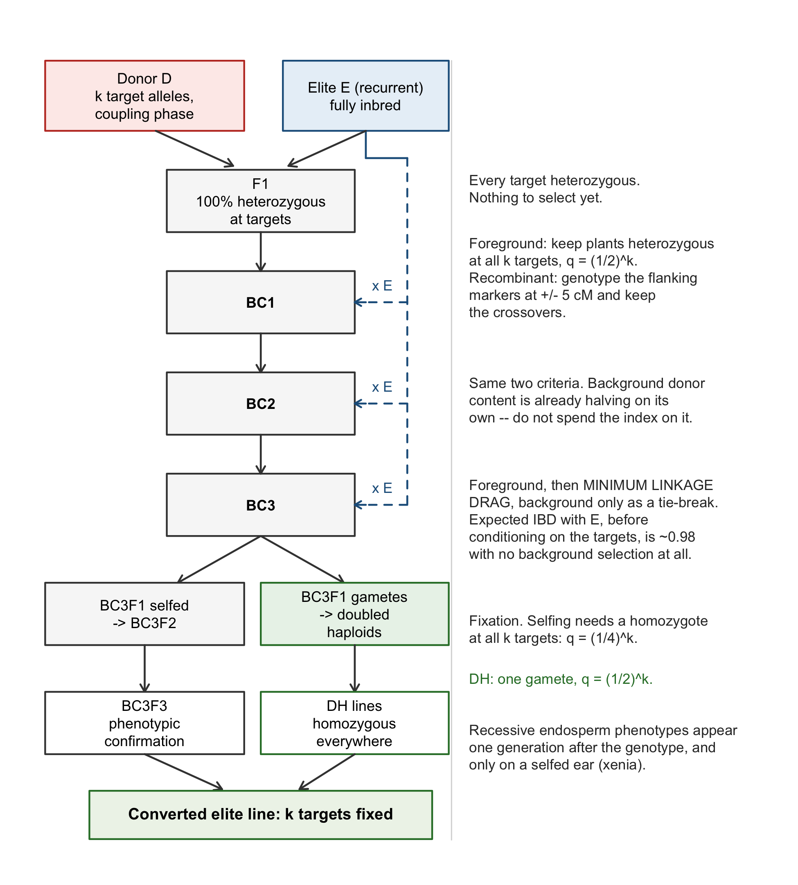
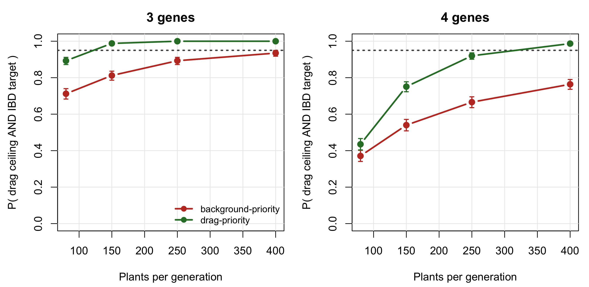
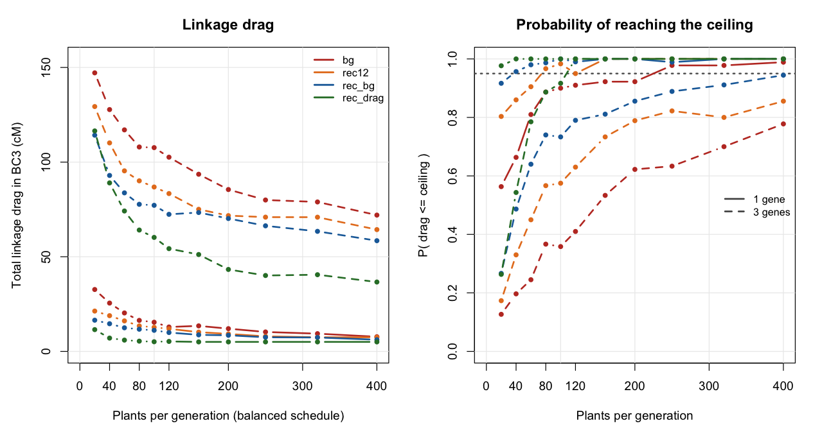
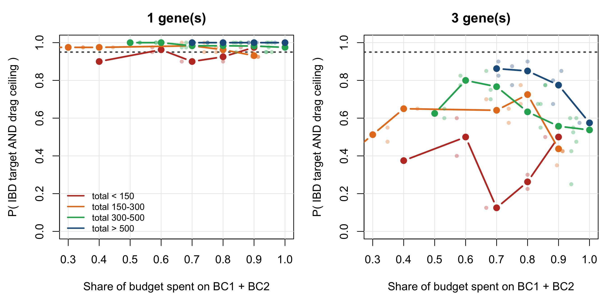
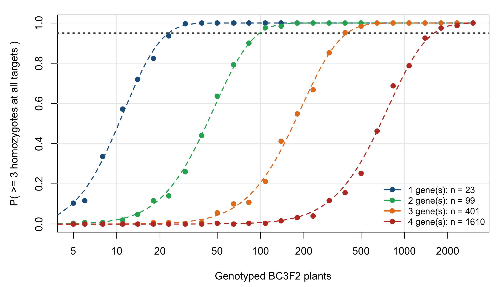
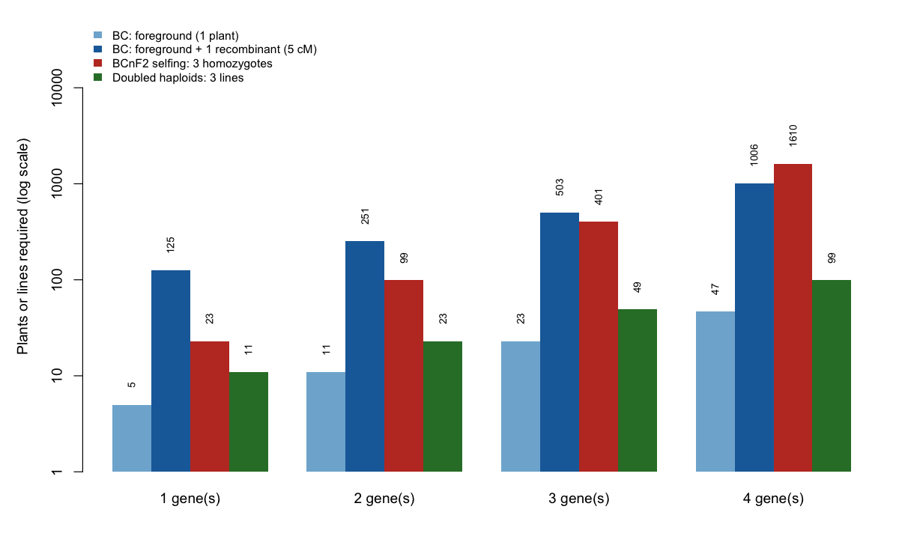

8 Introgressing several genes by backcrossing
Chapter 7 sized a segregating population for diversity: the objective was to sample as much of the cross as possible. This chapter is the mirror image. A donor line carries \(k\) genes worth having and an elite line carries everything else worth having, and the job is to move the \(k\) genes across while throwing the rest of the donor away. Here donor genome is contamination, and the only diversity that is wanted is the \(k\) target loci themselves.
The operation is marker-assisted backcrossing (MABC). The numbers below come from a simulator of it: a marker grid at 5 cM on ten maize chromosomes (1670 cM), one selected plant advanced per generation, \(k = 1\) to \(4\) recessive targets from a single donor, on four different chromosomes, carried to the third backcross generation, BC3. The engine and the selection index are R/08_mabc.R; the experiment driver inst/scripts/run_mabc.R writes tables of the shape of the six cached mabc_*.csv files, but not every cached copy was written by its current version; Section 8.8 states which run produced each one and how to re-run it.
8.1 The operation, in one diagram
Before any sizing question can be asked, the crossing operations have to be unambiguous – which plant is pollinated by which, and what is genotyped at each step (Figure 8.1).
Two features of that diagram do all the work in the rest of the chapter. The recurrent parent re-enters at every backcross, so donor content halves every generation whether or not anyone selects for it; and the fork at the bottom is where the plant numbers explode, because fixation asks for a homozygote and backcrossing never does.
8.2 The model
Two states, one haplotype. The recurrent parent is a fully homozygous inbred, so the gamete it contributes is invariant and only the donor-derived haplotype has to be tracked: a binary vector over 344 markers. Meiosis is a per-interval Bernoulli switch with the map function of Haldane (1919),
\[ r = \tfrac{1}{2}\bigl(1 - e^{-2d/100}\bigr), \tag{8.1}\]
where \(d\) is the interval length in cM and \(r\) its recombination fraction, which is exact for this chain precisely because Haldane is memoryless (see the limitation in Section 8.9).
Donor dosage and identity by descent (IBD) are different quantities. Donor and elite already share a fraction \(s\) of the genome by descent – they are both maize, and often both from the same heterotic group. Donor genome inside a shared tract costs nothing. So with \(D\) the donor dosage,
\[ \text{IBD}_E = 1 - (1 - s)\,D, \qquad \text{IBD}_E + \text{donor-specific} = 1 . \tag{8.2}\]
The second identity of Equation 8.2 holds exactly in the simulator for every plant. The first holds in expectation only: the shared fraction is a realised draw of windows, not a per-plant rate, and the target windows are forced to be non-shared, so a plant’s realised IBD scatters around \(1 - (1-s)D\). The test battery asserts the second with exact equality and the first with tolerance 0.02 (tests/testthat/test-mabc.R). Everything below uses \(s = 0.6\).
Coupling phase. All \(k\) targets come from one donor, on the same haplotype. Two consequences, and the second is easy to get wrong. Linked targets travel together, so linkage drag is the union of the donor segments, not their sum. And conditional on both flanking targets being donor-derived, an even number of crossovers is forced in the interval between them, so the probability that they sit in one continuous donor segment is not \(e^{-L}\) but
\[ P_{\text{same}} = \frac{e^{-L}}{\bigl(1 + e^{-2L}\bigr)/2}, \qquad L = d/100 \text{ Morgans}. \tag{8.3}\]
Show code
L <- c(20, 60, 400) / 100
stopifnot(isTRUE(all.equal(p_same_segment(100 * L),
exp(-L) / ((1 + exp(-2 * L)) / 2))))
data.frame(d_cM = 100 * L, naive = exp(-L), conditional = p_same_segment(100 * L))| d_cM | naive | conditional |
|---|---|---|
| 20 | 0.8187308 | 0.9803280 |
| 60 | 0.5488116 | 0.8435507 |
| 400 | 0.0183156 | 0.0366190 |
At 20 cM Equation 8.3 gives 0.98 against a naive 0.82.
ImportantIf the alleles come from different donors, none of this applies
Coupling phase is an assumption, not a convenience. Two linked targets in repulsion, from two donors, cannot both be recovered without a recombinant in the interval, and the cost explodes. That programme needs an intercross between the donors before any backcrossing starts, and this model does not describe it.
8.3 Three criteria, and only one of them binds
A conversion programme is usually written with three success conditions at BC3: do not lose the genes, recover the recurrent parent, and do not drag a chunk of donor chromosome along with each target. They are not remotely equal in cost.
Not losing the genes is exact and cheap. A backcross plant receives the donor allele at each target from its heterozygous parent with probability 1/2 (Mendelian segregation), independently across targets because the \(k\) targets sit on different chromosomes, so it is foreground-positive with probability \(q = (1/2)^k\) and \(n\) plants fail with probability \((1-q)^n\) (Table 8.1):
Show code
n_fg <- vapply(mb_sz$q_foreground, n_for_count, integer(1))
# smallest n with P(no foreground-positive plant) = (1 - q)^n <= 1 - 0.95
stopifnot(isTRUE(all.equal(mb_sz$q_foreground, 0.5^mb_sz$genes)),
(1 - mb_sz$q_foreground)^n_fg <= 0.05,
(1 - mb_sz$q_foreground)^(n_fg - 1) > 0.05)
knitr::kable(data.frame(genes = mb_sz$genes, q = mb_sz$q_foreground, n_BC_per_gen = n_fg),
row.names = FALSE,
caption = sprintf("Foreground sizing: per-plant probability q = (1/2)^k that a backcross plant carries the donor allele at all k unlinked targets, and the smallest number of plants per backcross generation (n_BC_per_gen) giving at least one such plant with probability %.2f. Exact, from n_for_count(); no simulation and no selection index involved.", MB$P))| genes | q | n_BC_per_gen |
|---|---|---|
| 1 | 0.5000 | 5 |
| 2 | 0.2500 | 11 |
| 3 | 0.1250 | 23 |
| 4 | 0.0625 | 47 |
At most 47 plants per generation at four genes, and that is the whole foreground problem.
Recovering the elite is free by BC3. The F1 carries donor dosage 1/2, and each backcross to the recurrent parent halves the expected donor content of an unselected plant, so with no background selection at all the expected donor dosage after 3 backcrosses is \((1/2)^{4} = 0.0625\), and
\[ \text{IBD}_E = 1 - (1 - s)\,(1/2)^{4} = 0.975 \]
at \(s = 0.6\). This is the expectation for a plant on which no selection has acted. Foreground selection conditions on the \(k\) targets being donor-derived, so the donor segments attached to them are retained and the realised dosage is higher: under the drag-priority index (rec_drag, defined in Section 8.4) the simulated IBD at BC3 with four genes ranges from 0.946 to 0.964 across the population sizes of the scan (Table 8.2). It is still above a 90% target before a single background marker is scored.
| genes | N = 20 | N = 80 | N = 200 | N = 400 |
|---|---|---|---|---|
| 1 | 0.982 | 0.992 | 0.996 | 0.998 |
| 2 | 0.968 | 0.974 | 0.981 | 0.985 |
| 3 | 0.956 | 0.965 | 0.969 | 0.971 |
| 4 | 0.946 | 0.952 | 0.959 | 0.961 |
That leaves linkage drag – the donor chromosome still attached to each target – as the only criterion that a large population can buy. It is the criterion the rest of the chapter is about.
NoteThe reframing
An index that spends its decisive stage on background recovery is spending it on the criterion that was already satisfied. This is not a hypothetical: it was the defect the technical review found in the first version of this simulator, and correcting it reverses the headline conclusion. Section 8.4 is that correction.
8.4 Which selection index
Four policies (Table 8.3), all applied to foreground-positive plants only:
mabc_uniform.csv and in run_bc_program(strategy =). All are applied to foreground-positive plants only.
| Key | Rule |
|---|---|
bg |
minimise background donor content |
rec12 |
recombinant selection in BC1-BC2 only, then background |
rec_bg |
recombinant selection throughout, background decides among survivors |
rec_drag |
recombinant selection throughout, linkage drag decides, background breaks ties |
rec_bg is the natural-looking two-stage rule: truncate on drag, then pick the cleanest background among the survivors. Stage 2 discards stage 1. The plant with the least drag survives the truncation and then loses to a sibling that happens to carry less donor genome somewhere irrelevant.
Figure 8.2 and Table 8.4 compare the two on common random numbers: mabc_index_comparison.csv, in which the label script is rec_bg and drag is rec_drag (the strategy column), uniform schedules of \(N\) plants in each of the three backcrosses.

| genes | N (plants/gen) | index | drag cM | IBD | P(IBD) | P(both) | lo |
|---|---|---|---|---|---|---|---|
| 3 | 80 | rec_bg | 79.092 | 0.972 | 1.000 | 0.712 | 0.683 |
| 3 | 80 | rec_drag | 65.445 | 0.964 | 0.999 | 0.893 | 0.872 |
| 3 | 150 | rec_bg | 71.160 | 0.978 | 1.000 | 0.812 | 0.786 |
| 3 | 150 | rec_drag | 51.060 | 0.967 | 1.000 | 0.988 | 0.979 |
| 3 | 250 | rec_bg | 64.838 | 0.982 | 1.000 | 0.893 | 0.872 |
| 3 | 250 | rec_drag | 42.447 | 0.970 | 1.000 | 1.000 | 0.996 |
| 3 | 400 | rec_bg | 59.127 | 0.984 | 1.000 | 0.935 | 0.918 |
| 3 | 400 | rec_drag | 36.443 | 0.972 | 1.000 | 1.000 | 0.996 |
| 4 | 80 | rec_bg | 136.680 | 0.955 | 0.976 | 0.371 | 0.341 |
| 4 | 80 | rec_drag | 130.279 | 0.953 | 0.976 | 0.435 | 0.404 |
| 4 | 150 | rec_bg | 118.932 | 0.964 | 1.000 | 0.540 | 0.509 |
| 4 | 150 | rec_drag | 102.925 | 0.957 | 1.000 | 0.751 | 0.723 |
| 4 | 250 | rec_bg | 109.332 | 0.970 | 1.000 | 0.666 | 0.636 |
| 4 | 250 | rec_drag | 87.598 | 0.960 | 1.000 | 0.920 | 0.901 |
| 4 | 400 | rec_bg | 101.677 | 0.974 | 1.000 | 0.764 | 0.736 |
| 4 | 400 | rec_drag | 74.718 | 0.962 | 1.000 | 0.987 | 0.978 |
Averaged over the 8 cells, the drag-priority index gives up 0.9 percentage points of IBD and removes 18.7 cM of drag. Under it the proportion of replicates meeting the IBD target is at least 0.976; the lowest value, at four genes and 80 plants, equals one minus the proportion of replicates that lost a gene (0.024), so that shortfall is foreground failure, not background. The IBD cost of the index therefore does not bind at these cells.
Four genes are certified – Clopper-Pearson lower bound at or above 0.95 – at 400 plants per generation, where P(both) is 0.987 with lower bound 0.978. At 250 plants, the next size tested, the lower bound is 0.901 and the cell is not certified; the grid does not locate the smallest certifying \(N\) between the two. The uniform scan of Table 8.2 estimates the same cell at 400 plants independently, on 90 replicates instead of 1000: 0.967, interval [0.906, 0.993], which overlaps the paired estimate and does not certify on its own lower bound; the paired table is the more precise of the two. Under the background-priority index the same cell reaches 0.764, which is what produced the original – and wrong – conclusion that the ceiling is unreachable at four genes and the programme must be extended to BC4-BC5 or split in two. The wall was a property of the index, not of maize.
8.5 How long to keep selecting recombinants
Figure 8.3 shows the four policies of Table 8.3 over the uniform scan. Its right panel is the drag ceiling alone, not the joint drag-and-IBD criterion of Figure 8.2 and Table 8.2, so its proportions are not comparable with those.

rec12 stops recombinant selection after BC2 and spends the BC3 choice on background, which by BC3 needs no clean-up (Table 8.2). In the uniform scan, three genes, 200 plants per generation, \(s = 0.6\) (90 replicates), mean drag at BC3 is 71.7 cM under rec12, 70.2 cM when recombinant selection continues into BC3 (rec_bg), and 43.3 cM when drag also decides among the survivors (rec_drag). In that cell the point estimate of the second step (rec_bg to rec_drag) is larger than that of the first (rec12 to rec_bg). These are three unpaired estimates, one per policy, from a scan seeded once for the whole grid, and mabc_uniform.csv records no standard deviation of drag, so no dispersion can be attached to either step; whether the first step differs from zero is not resolved by these data. Both changes are free in plants: they use the flanking markers on plants that are being genotyped anyway.
8.6 Allocating a fixed budget across BC1, BC2 and BC3
Given a total number of plants to grow, how should they be split between the three backcrosses? Figure 8.4 is the coarse scan of mabc_allocation.csv. It was run under the background-priority index rec_bg, before the index correction of Section 8.4 (the driver passes "rec_bg" to this experiment); its equal-size schedules are closer in mean drag to the rec_bg cells of the uniform scan than to the rec_drag ones (asserted in the figure’s chunk). It is shown as a description of how the success probability varies with the schedule under that index; the comparison of schedules under the drag-priority index is the paired re-run of Table 8.5.

Table 8.5 re-runs five schedules at a fixed budget of 360 plants, 3 genes, under both indices on common random numbers (mabc_allocation_recheck.csv). The two indices are paired within a schedule; the schedules are not paired with each other, so a comparison between schedules is between independent binomial proportions.
| BC1/BC2/BC3 (plants) | drag cM | P(lost) | P(both) | lo | hi | drag cM | P(lost) | P(both) | lo | hi |
|---|---|---|---|---|---|---|---|---|---|---|
| 300/40/20 | 94.600 | 0.057 | 0.427 | 0.396 | 0.458 | 76.933 | 0.057 | 0.681 | 0.651 | 0.710 |
| 120/120/120 | 73.665 | 0.000 | 0.775 | 0.748 | 0.801 | 55.180 | 0.000 | 0.969 | 0.956 | 0.979 |
| 20/150/190 | 79.979 | 0.063 | 0.632 | 0.601 | 0.662 | 61.105 | 0.063 | 0.872 | 0.850 | 0.892 |
| 40/120/200 | 75.668 | 0.004 | 0.749 | 0.721 | 0.776 | 58.459 | 0.004 | 0.955 | 0.940 | 0.967 |
| 200/120/40 | 81.882 | 0.005 | 0.662 | 0.632 | 0.691 | 62.389 | 0.005 | 0.924 | 0.906 | 0.940 |
Two schedules are called separated here when \(|z| \ge 2\), with \(z = (\hat p_1 - \hat p_2) / \sqrt{[\hat p_1(1 - \hat p_1) + \hat p_2(1 - \hat p_2)]/n}\), where \(\hat p_1, \hat p_2 \in [0, 1]\) are the two P(both) estimates and \(n = 1000\) the replicates per schedule (independent binomial proportions, normal approximation). Under the drag-priority index the balanced schedule 120/120/120 has the highest point estimate, 0.969 [0.956, 0.979], against 40/120/200, 0.955 [0.94, 0.967], \(z = 1.64\): the two are not separated. The schedules with a 20-plant generation, 20/150/190 and 300/40/20, have the two lowest point estimates under both indices. Under the drag-priority index the higher of the two, 20/150/190, is separated from the next schedule, 200/120/40 (\(z = 3.86\)); under the background-priority index the higher of the two, 20/150/190 (0.632), is not separated from 200/120/40 (0.662, \(z = 1.4\)), so under that index the ranking rests on point estimates only. In the two 20-plant schedules a target was lost in 0.063 and 0.057 of replicates, against \((1 - (1/2)^{3})^{20} = 0.069\) for one generation of 20 plants with no other cause of loss; the schedules whose smallest generation has 40 plants lose a target in at most 0.005 of replicates (\((1 - (1/2)^{3})^{40} = 0.005\)).
Conditioning on the targets being kept (a replicate that lost one counts as a failure, so \(P(\text{both} \mid \text{kept}) = P(\text{both}) / (1 - P(\text{lost}))\)), the drag-priority success rate is 0.969 for 120/120/120, 0.931 for 20/150/190 and 0.722 for 300/40/20.
The inference is that the two extreme schedules fail for different reasons. The back-loaded 20/150/190 loses most of its deficit to foreground failure in its 20-plant BC1; the front-loaded 300/40/20 also loses targets, but most of its deficit remains after conditioning on keeping them, which is consistent with having only 20 BC3 plants among which to select on drag at the last meiosis. Neither pattern requires a difference in how efficiently a BC1 or a BC3 plant reduces drag. The comparison is limited to five schedules at one budget, one gene number and one value of \(s\), and it does not order the three schedules without a 20-plant generation beyond the intervals shown. The direction agrees with the analytical result of Hospital (2001), that it is generally more profitable to allow three or more backcross generations than to favour recombination in early generations.
8.7 Fixing the stack: selfing against doubled haploids
Backcrossing only ever asks for a heterozygote. Fixation asks for a homozygote at all \(k\) targets, and that is where the plant numbers move: the BC3F2 plants needed for 3 homozygotes are 4.6 times the backcross plants needed for one foreground-positive plant at one gene and 34.3 times at four (Figure 8.6). Selfing a BC3F1 heterozygous at \(k\) unlinked targets gives the recessive homozygote at each with probability 1/4, so \(q = (1/4)^k\); a doubled haploid (DH) derived from a BC3F1 gamete is homozygous everywhere, and the gamete carries the donor allele at each target with probability 1/2, so \(q = (1/2)^k\).
And the requirement is not one plant but 3, which is a cumulative binomial \(P(\text{Bin}(n, q) \ge 3) \ge 0.95\), not \(1 - (1-q)^n\) (Table 8.6; Figure 8.5 sets the binomial against simulation):
| genes | q (selfing) | BC3F2 plants | q (DH) | DH lines |
|---|---|---|---|---|
| 1 | 0.25000 | 23 | 0.5000 | 11 |
| 2 | 0.06250 | 99 | 0.2500 | 23 |
| 3 | 0.01562 | 401 | 0.1250 | 49 |
| 4 | 0.00391 | 1610 | 0.0625 | 99 |


At four genes that is 1610 BC3F2 plants against 99 DH lines, a factor of 16.3. Where DH production is available, the BC3F2 number is not the bottleneck.
Without DH there is a staggered alternative. Do not ask one generation to fix everything. Select BC3F2 plants homozygous at a pre-specified pair of the four targets and heterozygous at the other two, \(q = (1/4)^2 (1/2)^2 = 1/64\): 401 plants for 3 such plants at \(P = 0.95\). Then self them and close out the remaining two at BC3F3, \(q = (1/4)^2\): 99 plants. Two stages of hundreds instead of one of 1610, at the cost of one generation.
8.8 Running the simulation
The engine and the decision layer are in R/08_mabc.R; the experiment driver is inst/scripts/run_mabc.R. The provenance of each cached table is stated at the end of this section.
One programme, interactively. Build a map, place the targets, draw the donor-elite sharing, and run the three backcrosses:
Show code
map <- build_map(maize_chr_len, spacing_cM = 5)
w <- marker_weights(map)
tg <- target_indices(map, k = 3) # the first three of maize_targets
set.seed(5) # the donor-elite sharing draw
sh <- make_shared_ibd(map, s = 0.60, mw = w, target_idx = tg)
set.seed(6) # the three backcross meioses
pr <- run_bc_program(n_sched = c(120, 120, 120), s = 0.60,
strategy = "rec_drag", map = map, opt = mabc_opt,
tg = tg, w = w, shared = sh)
fmt(pr$traj, 3)| gen | ibd | dose | drag | n_fg | ibd_pop_mean | fail |
|---|---|---|---|---|---|---|
| 1 | 0.903 | 0.255 | 195.0 | 9 | 0.882 | FALSE |
| 2 | 0.942 | 0.135 | 117.5 | 13 | 0.937 | FALSE |
| 3 | 0.960 | 0.073 | 60.0 | 16 | 0.959 | FALSE |
Show code
# The two identities of IBD_E on the same mask, over 200 unselected BC1 plants:
# the sum is exact per plant; the proportionality holds in expectation only.
# Tolerances are checked at this seed only; the relative error varies with
# the seed of both H1 and the mask.
set.seed(8)
H1 <- backcross(matrix(1, map$m, 1), 200, map)
stopifnot(
isTRUE(all.equal(ibd_elite(H1, w, sh) + donor_specific(H1, w, sh), rep(1, 200))),
isTRUE(all.equal(mean(donor_specific(H1, w, sh)),
(1 - 0.60) * mean(donor_dosage(H1, w)), tolerance = 0.06)),
isTRUE(all.equal(mean(donor_dosage(H1, w)), expected_donor(1), tolerance = 0.06)))n_sched is the schedule, one entry per backcross, so c(300, 40, 20) and c(120, 120, 120) are two of the allocations compared in Table 8.5. Passing the same shared mask to two calls is what makes a comparison between selection indices paired rather than confounded with the donor-elite pair.
Comparing indices on common random numbers. Reset the seed before each strategy so the two programmes see the same meioses:
Show code
drag_of <- function(strategy) {
set.seed(7)
run_bc_program(c(120, 120, 120), 0.60, strategy, map, mabc_opt, tg, w,
shared = sh)$traj$drag[mabc_opt$n_bc]
}
c(rec_bg = drag_of("rec_bg"), rec_drag = drag_of("rec_drag"))
#> rec_bg rec_drag
#> 70 45A single replicate is noise; the cells of Table 8.2 are 90-300 of these (uniform scan, by \(N\)) and those of Table 8.4 and Table 8.5 1000 (the two paired tables), which is the driver’s job.
The analytical sizing needs no simulation at all. It is a cumulative binomial, so it is exact and instant:
Show code
st <- sizing_table(k_max = 4, flank_cM = 5, P = 0.95, n_keep = 3)
stopifnot(isTRUE(all.equal(st, mb_sz))) # the cached table, reproduced exactly
st| genes | q_foreground | n_BC_1plant | n_BC_1rec | q_F2 | n_F2_1plant | n_F2_3plants | q_DH | n_DH_3lines |
|---|---|---|---|---|---|---|---|---|
| 1 | 0.5000 | 5 | 125 | 0.2500000 | 11 | 23 | 0.5000 | 11 |
| 2 | 0.2500 | 11 | 251 | 0.0625000 | 47 | 99 | 0.2500 | 23 |
| 3 | 0.1250 | 23 | 503 | 0.0156250 | 191 | 401 | 0.1250 | 49 |
| 4 | 0.0625 | 47 | 1006 | 0.0039063 | 766 | 1610 | 0.0625 | 99 |
The full scans, from the shell. The driver’s full run covers the uniform scan – rec_bg at \(s\) = 0.5, 0.6, 0.7 and the other three policies at \(s = 0.6\), by 4 gene numbers by 11 population sizes, 90-300 replicates per cell depending on \(N\) – plus the allocation grid and the BCnF2 stage, and writes the CSVs, the figures and a self-contained HTML report. Two further targets write the paired index tables:
Rscript inst/scripts/run_mabc.R --test # the driver's self-checks
Rscript inst/scripts/run_mabc.R --quick --out=DIR # reduced grid
Rscript inst/scripts/run_mabc.R --out=report/mabc # the full run
Rscript inst/scripts/run_mabc.R --out=book/data \
--only=index_comparison,allocation_recheck # the two paired tablesProvenance of the six cached tables, all written by this driver or its direct predecessor:
mabc_index_comparison.csvandmabc_allocation_recheck.csvare written directly intobook/databy the--only=index_comparison,allocation_recheckrun of the current driver, 1000 replicates per cell, with a seed per cell recorded in theseedcolumn, so each cell can be re-run in isolation.mabc_analytical_sizing.csvis the full run’sanalytical_sizing.csv; it has no random component, and the chunk above reproduces it exactly.mabc_uniform.csv,mabc_allocation.csvandmabc_bcnf2.csv(and the two figuresmabc_policies.pngandmabc_sizing.png) are the full run’sresults_uniform.csv,results_allocation.csv,results_bcnf2.csvand figures, copied intobook/dataandbook/figs, but the cached copies were produced by the predecessor of the current driver and have not been rewritten by it. The current driver writes files of the same shape; a bit-for-bit match is not expected because the full run sets its seed once before the whole scan, so no single cell can be regenerated in isolation, and no full re-run has been diffed against them. Replicates: 90-300 per cell in the uniform scan, 40 per schedule in the allocation scan.
Pointing it at your own programme. Three things change and nothing else:
Show code
# 1. your map
map <- build_map(my_chr_len_cM, spacing_cM = 5)
# 2. your targets -- same columns as maize_targets
my_targets <- data.frame(gene = c("A", "B"), chr = c(1, 5),
pos_cM = c(40, 110), label = c("A", "B"))
tg <- target_indices(map, k = 2, targets = my_targets)
# 3. your criteria
opt <- utils::modifyList(mabc_opt,
list(n_bc = 4, drag_per_gene = 20, target_ibd = 0.95))s – how much of the genome your donor and your elite already share – is the parameter worth measuring rather than assuming. It scales the whole cost: at \(s = 0.7\) most of the donor genome that survives is free, at \(s = 0\) none of it is.
8.9 Assumptions, and what is not modelled
These matter more than usual here, because unlike the diversity chapters this one is used to decide field area.
No crossover interference (material, and it cuts against the results above). Meiosis is Haldane (Equation 8.1) (Haldane 1919), so crossovers are independent between intervals. Maize crossovers show positive interference: Falque et al. (2009) fit a two-pathway model in which most crossovers follow a gamma renewal process with shape \(4.2 < \nu < 6.2\) on most chromosomes and a minority do not interfere. For the event this simulation depends on most when both flanking crossovers arise in the same meiosis – a double recombinant in the two 5 cM intervals flanking a target, which is what turns a long donor segment into a short one – Haldane gives \(r^2 = 2.26 \times 10^{-3}\). Positive interference makes a crossover in each of two adjacent short intervals rarer than the product of their recombination fractions, so the model over-produces tight recombinants, and every population size quoted for close-in trimming is expected to be a lower bound. By how much was not computed here. Note the direction: the index correction makes the problem easier, interference makes it harder, and they do not cancel in any principled way. The fix is a crossover-position sampler – chiasmata as a stationary gamma renewal process with shape \(\nu\), plus a non-interfering fraction as in Falque et al. (2009) – which reduces to Haldane exactly at \(\nu = 1\) and so is backward compatible.
One plant advanced per generation. A programme that advances several plants per generation and crosses each to the recurrent parent is not modelled. Every probability in this chapter is therefore a single-lineage probability: it understates achievable progress and it removes lineage-level variance from every distribution shown.
Uniform recombination rate, no distortion, no genotyping error. The local meiotic recombination rate varies more than 1000-fold across the maize genome, measured from breakpoints mapped at high resolution in nested association mapping populations (Rodgers-Melnick et al. 2015); a target in a cold region carries drag no feasible population will trim. Gametophyte factors shift the foreground frequency away from \(1/2\). Map positions here are illustrative and not pinned to a named consensus map – and maps of the intermated B73 x Mo17 (IBM) type (Lee et al. 2002) must be rescaled before use, exactly as in Chapter 7.
Triploid endosperm genetics is not modelled. The illustrative targets are endosperm genes. The endosperm is 2 maternal : 1 paternal, so a recessive kernel phenotype does not appear on the ear of a heterozygous plant: phenotypic confirmation lags the genotype by one generation, and xenia means it requires a self-pollination, not open pollination.
The gene set is illustrative, not a breeding recommendation. Whether all four targets are worth stacking is a breeding decision outside this model; dropping one turns the hard case (\(k = 4\)) into the comfortable one (\(k = 3\)). o2 alone gives opaque endosperm, not quality protein maize (QPM): QPM was created by selecting multiple, unlinked o2 modifier loci (Holding et al. 2008), which are unmodelled here and change the problem class from “stack \(k\) Mendelian genes” to “stack \(k\) genes plus a quantitative trait locus (QTL) background”.
WarningTwo statistical habits this chapter had to be repaired for
Select on the interval, not the point estimate. The first version of the sizing tables took the first grid point whose point estimate crossed 0.95. With few replicates per cell that is a winner’s curse: a success probability that is monotone in \(N\) reads as non-monotone through noise. The uniform scan still shows it at four genes under rec_drag: 0.989 at \(N = 320\) and 0.967 at \(N = 400\), on 90 replicates each. Selection is now on the Clopper-Pearson lower bound. Clopper-Pearson intervals are drawn in Figure 8.2 and Table 8.5 and the lower bound is tabulated in Table 8.4; Figure 8.4 gives a binomial standard error in its caption; Table 8.2, Figure 8.3 and Figure 8.5 show point estimates only, as their captions state.
Never type a number into the prose. Every figure in the original narrative was a string constant written against an earlier configuration; re-runs put the true values outside the reported confidence intervals, and the same document contradicted itself in three places. Results in this chapter’s prose and captions are computed at render time from the cached tables or from package functions; the only typed values are design inputs (the map spacing, the schedules, \(k\), \(s\) and the criteria in MB) and the replicate counts of the allocation scan and of the BC3F2 scan (MB_alloc, MB_f2), which their CSVs do not record; both are checked against the CSVs for consistency, not derived from them. Section 8.8 states where each table comes from.
8.10 Where this connects
Chapter 7 sized a population to keep diversity; this chapter sized one to discard it everywhere except at \(k\) loci. The two share their machinery – the same map, the same Haldane meiosis, the same distinction between what is segregating and what is fixed – and they share the lesson that dominates both: size for the objective that binds. In Chapter 7 that meant not sizing for gene diversity, which saturates early. Here it means not sizing for background recovery, which is already satisfied at BC3, and putting the plants into the one criterion that a population can actually buy.
The converted lines this chapter produces re-enter the pool the rest of the book optimises over. A conversion programme run for its own sake reduces diversity by construction: it makes an elite line into a near-copy of itself. If several conversions are run in parallel off the same recurrent parent, the resulting lines are close to each other.
Up to here that is an assertion, made in item 5 of the Preface’s chain of argument and in the preceding paragraph, not a measurement. It is cheap to measure, and the size of it is the argument. Eight BC3 conversions off one recurrent parent, against eight unrelated elite lines, put through the kernel of Chapter 2 (Table 8.7). The lines are inbred, coded 0/1 at biallelic markers with allele frequency 1/2, and drawn independently at each marker (no linkage). The donor is an unrelated line, so it matches the recurrent parent by state at about half the markers; donor-elite sharing is therefore already in the draw and is not added again through \(s\). A conversion carries the recurrent-parent allele by descent at a marker with probability \(1 - (1/2)^{4}\), the expected recurrent dosage at BC3 without selection, and the donor allele otherwise. Because \(\theta\) is a mean of per-marker identities, its expectation depends only on these per-marker probabilities; linkage would change its dispersion, not its expectation.
Show code
set.seed(11)
m_c <- 2000
elite <- matrix(rbinom(40 * m_c, 1, 0.5), 40, m_c) # unrelated elite lines
rec <- elite[1, ] # one recurrent parent
donor <- elite[40, ]
ibd <- 1 - expected_donor(3) # recurrent genome by descent at BC3
conv <- t(sapply(1:8, function(i)
ifelse(rbinom(m_c, 1, ibd) == 1, rec, donor)))
cost <- data.frame(
panel = c("8 BC3 conversions, one recurrent parent", "8 unrelated elite lines"),
theta = c(mean(molecular_coancestry(conv)),
mean(molecular_coancestry(elite[1:8, ]))))
cost$GD <- 1 - cost$theta
# realised ratio against its expectation 2D(1 - D); the tolerance is checked
# at this seed only
D <- expected_donor(3)
stopifnot(isTRUE(all.equal(cost$GD[1] / cost$GD[2], 2 * D * (1 - D),
tolerance = 0.15)))
knitr::kable(cost, row.names = FALSE, digits = 4,
caption = sprintf("Group coancestry theta (diagonal included) and gene diversity GD = 1 - theta of eight BC%d conversions off one recurrent parent and of eight unrelated elite lines: one draw (set.seed(11)) of %d unlinked markers, inbred lines coded 0/1, recurrent genome by descent with probability 1 - (1/2)^%d, no selection.", MB$n_bc, m_c, MB$n_bc + 1))| panel | theta | GD |
|---|---|---|
| 8 BC3 conversions, one recurrent parent | 0.9452 | 0.0548 |
| 8 unrelated elite lines | 0.5617 | 0.4383 |
The converted panel carries 0.125 times the gene diversity of the unrelated one. In expectation, two conversions differ at a marker only when exactly one carries the donor allele and the donor differs from the recurrent parent there, probability \(2D(1-D)\cdot\tfrac12\) with \(D = (1/2)^{4}\), against \(1/2\) for two unrelated lines, so the off-diagonal ratio is \(2D(1-D) = 0.117\). The diagonal of \(\theta\) is 1 in both panels and scales both gene diversities by the same factor, so this is also the expected ratio of the two; the realised value above is one draw of 2000 markers. Conversion is designed to make lines identical everywhere except the target, and it succeeds.
Two consequences for the rest of the book. A conversion programme must be counted against the diversity budget of Chapter 15 rather than run alongside it, because \(\theta\) cannot distinguish eight conversions from one line entered eight times. And Chapter 13’ per-line usage cap is the mechanism that already handles this: capping how often a line is used caps how often its near-copies are, provided the conversions are recognised as near-copies rather than entered as eight independent parents.
WarningDo not enter a converted panel as independent lines
The failure mode is administrative, not statistical. Conversions arrive with distinct line codes and distinct pedigree entries, so a pipeline that trusts the codes will treat them as eight parents. The coancestry matrix will not, and Chapter 12’s recommendation to compute \(\theta\) on markers rather than on pedigree is what protects against exactly this.
Reproduce this chapter
All the code of this chapter, in order and with the explanation kept as comments, is one script: 04b-backcross-introgression.R. Download it, install hybdiv, and run it top to bottom in an empty directory; cached results are fetched on first use.